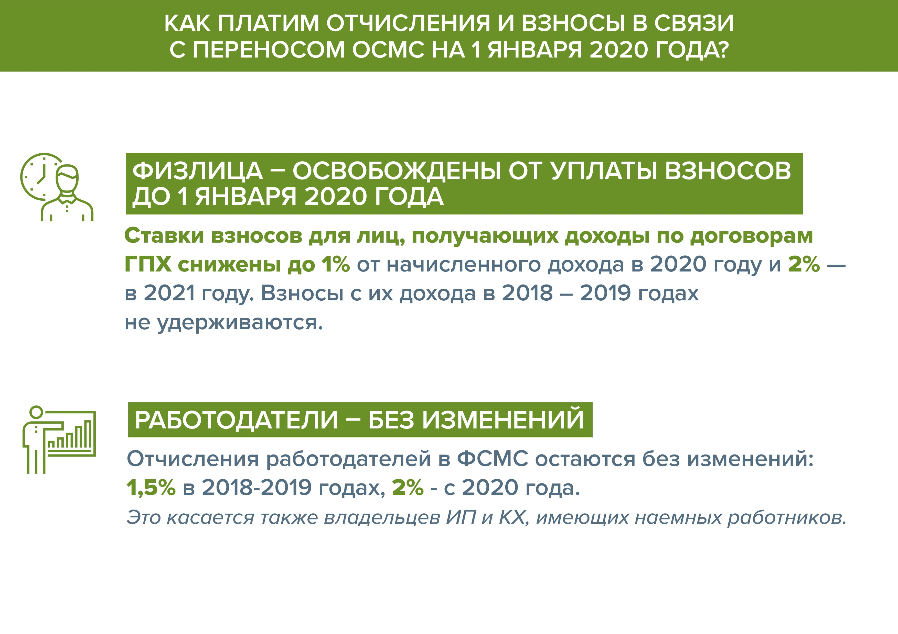
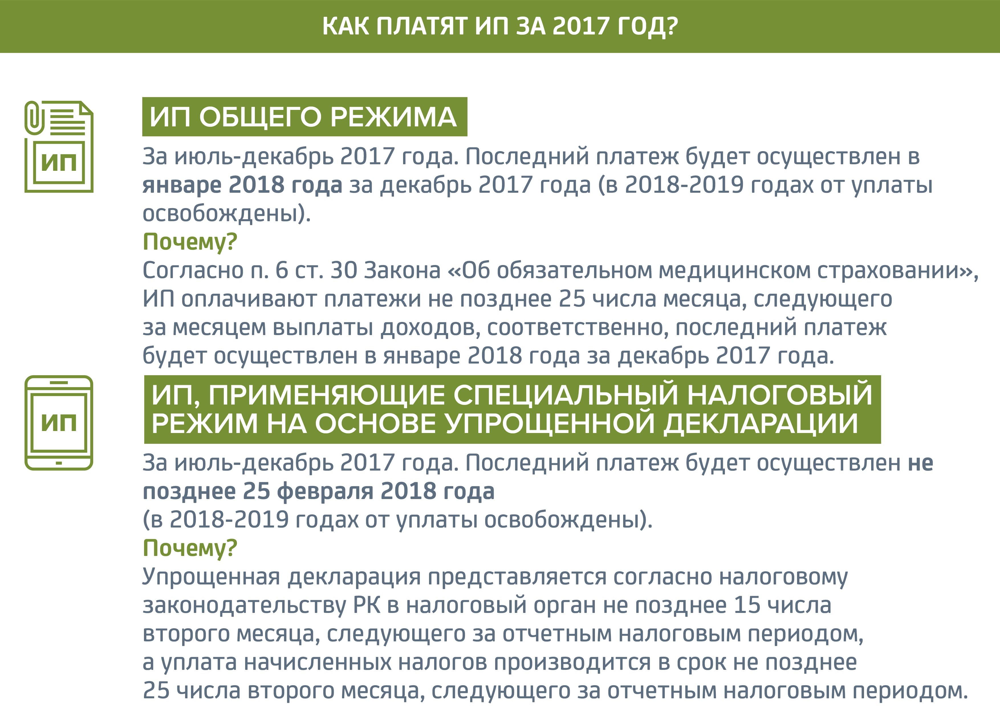
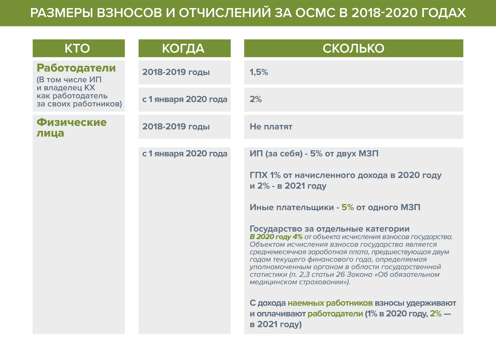

Система обязательного социального медицинского страхования – это государственная система социальной защиты интересов в сфере охраны здоровья.
Обязательное социальное медсоцстрахование (ОСМС) гарантирует всем застрахованным гражданам Казахстана независимо от пола, возраста, социального статуса, места проживания и доходов равный доступ к медицинской и лекарственной помощи за счет средств Фонда социального медицинского страхования.
ОСНОВНЫЕ ЦЕЛИ ОСМС
- Достижение общественной солидарности путем укрепления собственного здоровья и разделения бремени охраны здоровья населения
- Обеспечение финансовой устойчивости системы за счет создания устойчивости системы к внешним факторам и росту затрат, а также прозрачности и справедливости системы
- Повышение эффективности системы через обеспечение высокой компетенции и конкурентоспособности системы, достижение конечных результатов доступности, полноты и качества услуг
ПРИНЦИПЫ ОСМС
- УНИВЕРСАЛЬНОСТЬ
В системе ОСМС обязаны участвовать все постоянно проживающие жители (всеобщий охват) и каждый из них должен платить взносы (либо за него платит государство)
- СОЦИАЛЬНАЯ СПРАВЕДЛИВОСТЬ
Взносы экономически активного населения зависят от платежеспособности т.е. доходов, а взносы за экономически неактивных платит госбюджет из общих налогов
- СОЛИДАРНОСТЬ
Каждый застрахованный имеет право на медпомощь оплачиваемую ОСМС вне зависимости от суммы уплаченных взносов.
ОБЯЗАТЕЛЬНЫЕ ПЛАТЕЖИ В ОСМС
ВЗНОСЫ ГОСУДАРСТВА НА ОСМС
Государство от среднемесячной заработной платы, предшествующей двум годам текущего финансового года, определяемая уполномоченным органом в области государственной статистики будет отчислять с 1 января 2018 года – 4 % , с 1 января 2019 года – 5 %, с 1 января 2024 года – 6 % и с 1 января 2025 года – 7 %.
ОТЧИСЛЕНИЯ РАБОТОДАТЕЛЕЙ НА ОСМС
Работодатель от своих расходов, выплачиваемые работнику в виде доходов (заработной платы), будет выплачивать с 1 июля 2017 года – 2 %, с 1 января 2018 года – 3 %, с 1 января 2019 года – 4% и с 1 января 2020 года – 5 %.
ВЗНОСЫ РАБОТНИКОВ НА ОСМС
Взносы работников от доходов (заработной платы), начисленных работодателями составят с 1 января 2019 года – 1% и с 1 января 2020 года – 2 %
ВЗНОСЫ САМОЗАНЯТОГО НАСЕЛЕНИЯ НА ОСМС
Исчисление и уплата взносов индивидуальных предпринимателей, частных нотариусов, частных судебных исполнителей, адвокатов, профессиональных медиаторов с 1 июля 2017 года – 2 %, с 1 января 2018 года – 3 % , с 1 января 2019 года – 5 % и с 1 января 2020 года – 7 % будут осуществляться:
— для индивидуальных предпринимателей, применяющих общеустановленный режим налогообложения: от доходов, полученных ими в результате осуществления предпринимательской деятельности с учетом вычетов
— для индивидуальных предпринимателей, применяющих специальный налоговый режим для субъекта малого бизнеса: от размера одной минимальной заработной платы
— для частных нотариусов, частных судебных исполнителей, адвокатов, профессиональных медиаторов, физических лиц, получающих доходы по договорам гражданско-правового характера: от всех видов доходов
Права физических лиц на получение медицинской помощи в системе ОСМС и выбор организации здравоохранения, определение объема медицинской помощи, получаемого в системе ОСМС, также будут введены в действие с 1 января 2018 года.
КАТЕГОРИЯ ГРАЖДАН, ОСВОБОЖДЕННЫХ ОТ УПЛАТЫ ВЗНОСОВ
Согласно закону «Об ОСМС» освобождаются от уплаты взносов в фонд 15 категорий граждан:
- дети;
- многодетные матери;
- участники и инвалиды ВОВ;
- инвалиды;
- лица, зарегистрированные в качестве безработных;
- лица, обучающиеся и воспитывающиеся в интернатных организациях;
- лица, обучающиеся по очной форме обучения;
- лица, находящиеся в отпусках в связи с рождением, усыновлением (удочерением) ребенка;
- неработающие беременные женщины, а также неработающие лица, фактически воспитывающие ребенка до достижения им возраста трех лет;
- пенсионеры;
- военнослужащие;
- сотрудники специальных государственных органов;
- сотрудники правоохранительных органов;
- лица, отбывающие наказание по приговору суда в учреждениях уголовно-исполнительной системы;
- лица, содержащиеся в изоляторах временного содержания и следственных изоляторах.
ПРЕДОСТАВЛЕНИЕ МЕДИЦИНСКОЙ ПОМОЩИ ИНОСТРАНЦАМ
В текущей ситуации в Казахстане ГОБМП не предоставляется:
- Иностранцам и членам их семей, постоянно проживающим в РК с видом на жительство
- Лицам без гражданства
- Иностранцам, временно проживающим в Республике Казахстан
В рамках ОСМС иностранцы и лица без гражданства, постоянно проживающие на территории Республики Казахстан, а также оралманы пользуются правами и несут обязанности в системе обязательного социального медицинского страхования наравне с гражданами Республики Казахстан, если иное нем предусмотрено настоящим Законом.*
Внесение изменений в ЗРК «Об обязательном социальном медицинском страховании» в части предоставления медпомощи:
- Неработающим оралманам и их членам семей в течение одного года за счет взносов государства (так как статус «оралман» предоставляется на 1 год, если он за этот период не получает гражданство, то он считается как «иностранец»;
- Неработающим иностранцам и членам их семей, постоянно проживающим в РК наравне с гражданами РК;
- Работающим иностранцам и членам их семей на общих основаниях.
ДВИЖЕНИЕ СРЕДСТВ ОСМС
За неактивное население на ГОБМП и трансферты Фонду (взносы на ОСМС за лиц, освобожденных от их уплаты) платит государство из республиканского бюджета. Денежные средства перечисляются ежемесячно по плану финансирования через бюджетную программу Министерство здравоохранения и социального развития в Фонд социального медицинского страхования.
В свою очередь, взносы активного населения (работодателей, работников, индивидуальных предпринимателей, частных нотариусов, адвокатов, медиаторов и др.) будут поступать в Фонд социального медицинского страхования через Государственный центр по выплате пенсий. Это обеспечит учет поступлений по аналогии с действующей пенсионной системой и Государственного фонда социального страхования, а также даст экономию средств за перечисление взносов.
Стоит отметить, что на ГЦВП будут лежать функции по проверке индивидуальных идентификационных номеров участников, возврату ошибочных платежей, передаче информации в Налоговый комитет для сверки работы с неплательщиками и персональному учету.
Фонд социального медицинского страхования будет распределять денежные средства следующим образом: часть будет отправлена на оплату услуг в субъекты здравоохранения, то есть в медорганизации, а часть будет отправлена в Национальный банк, который будет инвестировать денежные средства и полностью управлять активами.
РАСЧЕТ ОТЧИСЛЕНИЙ И ВЗНОСОВ НА ОСМС
Работодатель отчисляет взносы за работников из расходов, выплачиваемых работнику в виде доходов, то есть из фонда оплаты труда до вычета корпоративного подоходного налога (КПН). Исчисление и перечисление отчислений/взносов работников осуществляются работодателем ежемесячно
Работники отчисляют взносы из доходов, начисленных работодателями, то есть заработной платы до вычета индивидуального подоходного налога (ИПН). Исчисление и перечисление взносов физических лиц осуществляются ежемесячно налоговыми агентами, с которыми заключены такие договоры.
Индивидуальные предприниматели отчисляют взносы из доходов, полученных ими в результате осуществления предпринимательской деятельности до вычета индивидуального подоходного налога (ИПН). Исчисление и уплата взносов ИП осуществляются ими самостоятельно путем прямого зачисления средств через Государственную корпорацию на счет фонда. В случае индивидуального предпринимателя, применяющего специальный налоговый режим, доходом является размер одной минимальной заработной платы.
Стоит отметить, что для всех категорий уполномоченным органом определены доходы, с которых не уплачиваются отчисления и взносы,
- компенсации при служебных командировках и разъездном характере работы,
- полевое довольствие работников,
- расходы, связанные доставкой работников, на оплату обучения, пособия и компенсации из средств бюджета,
- пособие к отпуску на оздоровление, выплаты для оплаты медицинских услуг, при рождении ребенка, на погребение в пределах 8 МЗП, стипендии, страховые премии.
При этом минимальный размер объекта исчислений/взносов не может быть меньше минимального размера заработной платы.
Ежемесячный доход, принимаемый для исчисления отчислений/взносов, не должен превышать 15-кратный размер минимальной заработной платы.
Все взносы должны быть отчислены не позднее 25 числа месяца, следующего за отчетным/за месяцем выплаты доходов.
ПАКЕТЫ МЕДИЦИНСКИХ УСЛУГ
1. Пакет ГОБМП — включающий гарантированный государством объем медицинской помощи и финансируемый за счет республиканского бюджета (ГОБМП). Он будет доступен для всех граждан РК и оралманов. Он включает:
- скорую помощь и санитарную авиацию;
- медицинскую помощь при социально-значимых заболеваниях и в экстренных случаях;
- профилактические прививки;
- амбулаторно-поликлиническую помощь (АПП) с амбулаторно-лекарственным обеспечением (АЛО) (для непродуктивно самозанятого населения до 2020 года, т.е. до внедрения всеобщего декларирования).
2. Пакет ОСМС — включающий объем медицинской помощи сверх ГОБМП, финансируемый за счет обязательных страховых взносов государства, работодателей и работников в Фонд ОСМС. Его могут получать лица, являющиеся участниками ОСМС. В него входит:
- амбулаторно-поликлиническая помощь (в т. ч. АЛО);
- стационарная мед. помощь (за исключением социально-значимых заболеваний);
- стационарозамещающая помощь (за исключением социально-значимых заболеваний);
- восстановительное лечение и мед. реабилитация;
- паллиативная помощь и сестринский уход;
- высокотехнологичная помощь.
ОЦЕНКА КАЧЕСТВА МЕДИЦИНСКИХ УСЛУГ
Кто будет способствовать улучшению качества предоставляемых медицинских услуг?
Объединенная комиссия по качеству (ОКК) будет:
- совершенствовать стандарты медицинского образования
- совершенствовать клинические протокола
- совершенствовать лекарственное обеспечение
- совершенствовать стандарты системы контроля качества и доступности услуг в сфере здравоохранения
- контролировать соблюдение стандартов качества и доступности медицинских услуг
2. ККМФД будет осуществлять гос.контроль, в т.ч.:
- контроль за соблюдением стандартов в области здравоохранения;
- проверка летальных случаев, в т.ч. по запросу ФСМС;
- проверка жалоб.
3. Управления здравоохранения (УЗ) будут:
- проводить стандартизацию сети и служб системы здравоохранения
- обеспечивать внедрение стандартов диагностики и лечения
- стимулировать аккредитацию медицинских организаций в национальной и международной системе аккредитации
- снижать количество обоснованных жалоб населения и проведение социологических исследований по удовлетворенности населения качеством медицинских услуг
- обеспечивать эффективность внешнего контроля качества и внутреннего аудита в медицинских организациях
- обеспечивать непрерывное повышение квалификации медицинских работников и развитие системы независимой оценки компетенций медицинских работников
3. Фонд будет осуществлять проверку на основании заключенного договора с медорганизацией, в т.ч.:
- экспертизу объемов и качества пролеченных случаев;
- экспертизу обоснованности назначения ЛС и ИМН;
- мониторинг индикаторов конечного результата деятельности поставщиков.
По результатам проверок Фонд будет формировать базу данных медицинских организаций, имеющих положительные и отрицательные рейтинги.
ОЖИДАЕМЫЕ РЕЗУЛЬТАТЫ
- Доступность качественной медицинской помощи
- Система здравоохранения, способная отвечать потребностям населения
- Улучшение здоровья, увеличение продолжительности жизни
- Расширение амбулаторно-лекарственного обеспечения
- Усиление контроля качества предоставляемых медицинских услуг
Снижение уровня частных расходов (из собственного кармана)на здравоохранение